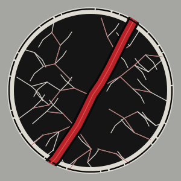
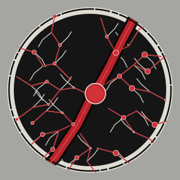
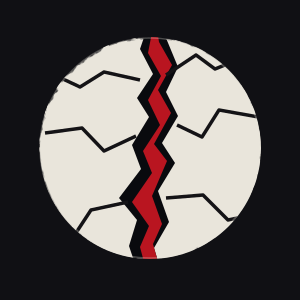
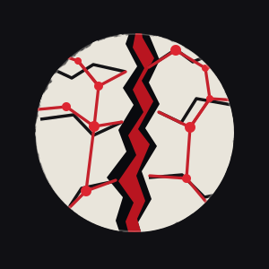

La Faille noire · R4 candidate
Nouvelle géométrie proposée, non approuvée

La Faille noire × Interstice · R5-GRA · Décision artistique
Les deux exports SVG R4 sont des candidats. Les anciens actifs restent en place. Cette page de dossier est isolée, sans nouvelle direction artistique, sans bascule de favicon, sans fusion ni publication.
Deux exports R4 et deux anciens actifs, affichés en même temps. Le fond pierre est celui du SVG candidat ; les anciens actifs conservent leur fond d'origine. Le rendu dépend de leur code réel, sans image de remplacement.
Nouvelle géométrie proposée, non approuvée

Même base et surcouche de nœuds, non approuvée

Archive immuable de la branche de convergence

Archive immuable de la branche de convergence

| Élément | Constat sur les R4 | Réserve / correction ciblée |
|---|---|---|
| Même base | Groupe base-identite strictement identique entre les deux fichiers (vérification du contenu). | Conserver ce groupe commun et la surcouche distincte. |
| Faille principale | Tracé rouge oblique, régulier dans son épaisseur. | Vérifier le contour accidenté et le sens sur les PNG approuvés avant toute retouche. |
| Fissures secondaires | 55 chemins ivoire dans la base, densification R4 confirmée. | À comparer avec les microcraquelures, irrégularités et grains du raster approuvé. |
| Diffusion rouge | 17 chemins secondaires rouges partiels, plus une surcouche rouge complète dans Interstice. | Revoir le gradient de propagation à partir de la faille ; éviter la coloration uniforme de tout le réseau. |
| Point majeur | Centre (159,156), rayon 17 sur Interstice ; distance au centre de la fissure rouge ≈ 3,6 unités SVG. | Position approximativement dans la fissure, mais centre et diamètre exacts non confrontés au PNG validé. |
| Points secondaires | 30 petits cercles en surcouche Interstice. Une partie suit les chemins tracés. | Vérifier leur implantation sur les ramifications, la répartition et l'impression aux petites tailles. |
| Fond et matière | R4 : pierre #a5a5a2, cercle noir et anneau ivoire plus géométriques que le rendu artisanal décrit. | Confronter la texture au raster ; ne pas inventer un motif distinct. |
| Lettres et usages | Les symboles SVG ne contiennent pas de texte ; les anciens actifs/favicons restent inchangés dans R4. | Ne remplacer aucun chemin officiel sans visa de Zout. |
Les trois réponses ci-dessous sont des options d'arbitrage, aucune n'est enregistrée ici. Il n'y a ni formulaire ni transmission automatique.
Recommandation Graphiste : CORRECTIONS À EXAMINER / VALIDATION BLOQUÉE, tant que les deux recadrages approuvés ne sont pas confrontés aux exports R4. Ce constat n'est pas une décision de Zout.
Branche de référence : integration/r4-convergence-relieuse-20261102 ; PR #141, HEAD observé avant préparation : 9f733122c7196622d31e7996d1d0b4eea987a14d. Source des SVG R4 : PR #137. Toute évolution ultérieure de ces branches exige un nouveau contrôle.
ec068bdca1999bb132380d6182341e863ef4df65.a577f915a61104d17712517ebfa55a3a0949cfb1.c5d545a762e0ae205b235cea6d17e2ec51d2eff7.7c863aa239462c82b5a5dbcf26e5981b9131b0e8.Rollback : aucun remplacement n'a eu lieu sur cette branche R5 ; laisser les chemins actifs assets/logo-faille-noire.svg et assets/logo-interstice.svg intacts. Fermeture de la PR R5 sans merge = retour au périmètre R4. Les archives et les candidats demeurent conservés.
Référence raster validée absente de GitHub : ne pas substituer une planche historique antérieure ni présenter les captures R5 comme preuve d'identité parfaite.